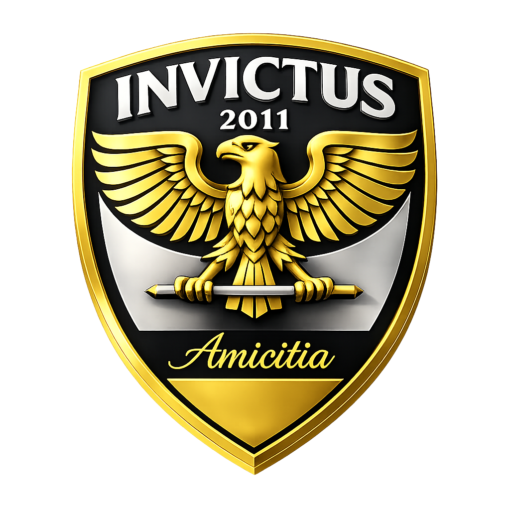
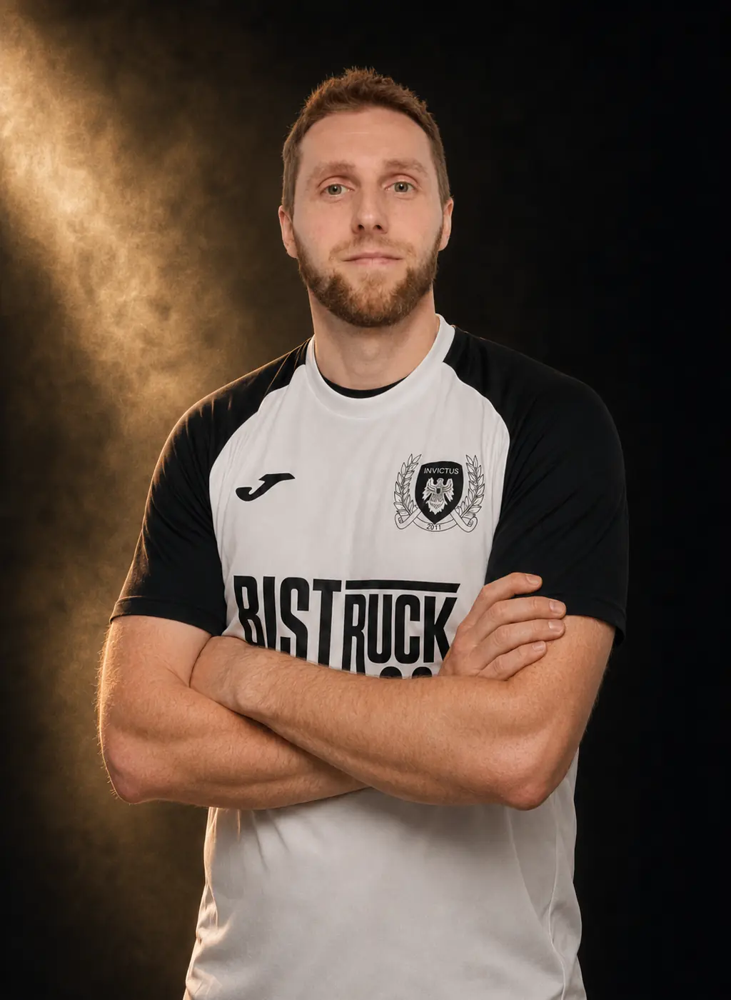

Čtyři nadšenci a jeden nápad
Marek Adamec, Jakub Čespiva, Filip Hrbek a Petr Zálešák se rozhodli založit vlastní futsalový klub. Cesta nebyla jednoduchá, ale po velkém úsilí se jejich nápad stal skutečností.
Marek Adamec, Jakub Čespiva, Filip Hrbek a Petr Zálešák se rozhodli založit vlastní futsalový klub. Cesta nebyla jednoduchá, ale po velkém úsilí se jejich nápad stal skutečností.
Startovné 15 000 Kč bylo pro mladé studenty téměř nepřekonatelnou překážkou. Díky tehdejšímu předsedovi Havířovské futsalové ligy, panu Svorníkovi, jej mohli zaplatit nadvakrát a nastoupit do první sezony.
Začátky byly tvrdé. Na první gól čekal tým dlouhých jedenáct zápasů. Vstřelil jej Petr Zálešák a navždy se tak zapsal jako první střelec v historii Invictu.
První výhra na hřišti přišla až ve druhé sezoně. V premiérovém ročníku tým zaznamenal pouze kontumační vítězství kvůli nedovoleným startům soupeře z Horní Suché.
Na týmové poradě v den založení byl kapitánem zvolen Jakub Čespiva – hlavní zakladatel a „otec Invictu“. Kapitánskou roli zastává dodnes.
Název vznikl v tehdejší klubovně, hospodě na Nábřeží U Sváti, které nikdo z týmu neřekl jinak než U Koníčka. Latinské slovo invictus znamená „neporažený“ – odvážný cíl, ke kterému klub od začátku směřuje.
První podobu klubového loga vytvořil zakladatel Filip Hrbek. Do současné a dalších podob jej rozvinul Petr Zálešák, který se stará o grafickou tvář Invictu.
Od zapůjčených erárních dresů Saxon přes KIK a Nike Victory až po současnou sadu Joma s partnerem Bistruck.
Samostatná podsekceProhlédnout vývoj dresů a fotografie →V průběhu let následovaly další 4 sezony v této lize.
Invictus během své historie nepůsobil pouze v Havířovské futsalové lize. Nastupoval také v Karvinské a Ostravské futsalové lize a aktivně se účastnil turnajů Futsalmania Orlová.
Soupiska se během let výrazně proměnila, ale zdravé jádro přátel zůstalo. Právě ono je největším vítězstvím klubu – a plánuje zůstat až do posledního výdechu Invictu.
15 let Invictus 2011
Pro sezonu 2026/2027 klub představil speciální výroční znak k patnácti letům od svého založení. Zlaté logo bude Invictus používat pouze během této jubilejní sezony; poté se vrátí ke své klasické klubové identitě.

Historické statistiky
Pořadí spojuje ověřené individuální záznamy z Havířovské, Karvinské a Ostravské futsalové ligy. Započítáváme pouze čísla přiřazená ke konkrétním hráčům, nikoli týmové branky z kontumací.

dohledaných zápasů za Invictus
| Pořadí | Hráč | Zápasy |
|---|---|---|
| 1. | Jakub Malý | 88 |
| 2. | Jakub Mojzeš | 87 |
| 3. | David Vallo | 78 |
| 4. | Petr Zálešák | 77 |
| 5. | Jakub Čespiva | 70 |
| 6. | Tomáš Malý | 53 |
| 7. | Jakub Horňák | 32 |
| 8. | Filip Hrbek | 27 |
| 9. | Adam Sivera | 23 |
| 10. | Martin Myšák | 21 |

dohledaných gólů za Invictus
| Pořadí | Hráč | Góly |
|---|---|---|
| 1. | Jakub Čespiva | 54 |
| 2. | David Vallo | 42 |
| 3. | Petr Zálešák | 28 |
| 4. | Tomáš Malý | 25 |
| 5. | Jakub Malý | 21 |
| 6. | Daniel Klimša | 13 |
| 7. | Ján Štromp | 9 |
| 8. | Adam Sivera | 5 |
| 9. | Martin Myšák | 5 |
| 10. | Tomáš Poncza | 4 |
Rozsah evidence
Zdroje: Futsal Havířov, Futsal Karviná 2019/20, Futsal Karviná 2021/22 a FAČR – Invictus Ostrava. Starší karvinské a ostravské ročníky bez kompletní individuální evidence nejsou dopočítávány odhadem. Aktualizováno 4. 8. 2026.
„Invictus“ znamená neporažený.
Ne skóre na tabuli, ale duch, který se nevzdává.